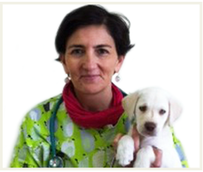

La dott.ssa Sabrina Maria Grazia Ferreri DVM-GPCert (SAM) - GPCert (ONCOL) si è laureata con il massimo dei voti nell’anno 1995 presso la Facoltà di Medicina Veterinaria dell’Università di Messina e si è da sempre occupata esclusivamente di Medicina Interna ed Oncologia di piccoli animali, partecipando a numerosi corsi e congressi sia in Italia che all’estero.
Nel triennio 2010-2013 ha frequentato e concluso il “I Itinerario Nazionale di Oncologia Veterinaria”, organizzato dalla Scuola Superiore di Medicina Veterinaria della SCIVAC.
Nel biennio 2013-2014 frequenta il “Curso de Medicina de Pequenos Animales” presso il Centro di Formazione post universitaria dell’Improve International di Barcellona (Spagna), finalizzato al conseguimento della qualification GPCert (SAM), seguendo e collaborando con i massimi esperti e docenti di fama nazionale ed internazionale.
Nel biennio 2014-2015 frequenta il “Master di II livello in Oncologia Veterinaria” presso la Facoltà di Medicina Veterinaria dell'Università degli Studi di Pisa, superando nel luglio del 2016 la prova d’esame discutendo la tesi “Plasmocitoma Cutaneo Extramidollare Multiplo di un Boxer”, Case Report di una formazione neoplastica di particolare rarietà.
Nel 2015 frequenta un tirocinio presso la Clinic for Surgery and Small Animal Medicine della Facoltà di Medicina Veterinaria dell’Università di Ljubljana (Slovenia) approfondendo le proprie competenze sull’Elettrochemioterapia (ECT).
Nel marzo del 2016 consegue il titolo europeo di “General Practitioner Certificate in Small Animal Medicine” GPCertSAM rilasciato dall’ ESVPS (European School of Veterinary Postgraduate Studies) con sede nel Regno Unito (GB), superando l’esame svoltosi a Madrid (Spagna).
Nel biennio 2018-2019 frequenta l’itinerario di studio accreditato dall’ISVPS (International School of Veterinary Postgraduate Studies) presso il Centro di Formazione post Universitaria dell’Improve International di Madrid (Spagna), finalizzato al conseguimento della qualification GPCert (ONCOL), seguendo e collaborando con i massimi esperti e docenti di fama internazionale.
Nel settembre del 2020 sostiene e supera gli ultimi esami per il conseguimento del titolo internazionale di “General Practitioner Certificate in Oncology” GPCert (ONCOL), rilasciato dall’ISVPS con sede nel Regno Unito (GB), riuscendo ad accreditarsi con l’Improve International di Madrid (Spagna) quest’ultima qualificazione oltre al GPCert SAM.
È membro ESVONC (European Society of Veterinary Oncology) e SIONCOV (Società Italiana di Oncologia Veterinaria) nonchè AIVO (Associazione Italiana Veterinari per l’Oncologia), inoltre è socio A.V.E.P.A. (Asosìaciòn de Veterinarios Espanoles Espacialistas en Pequénos Animales) e SCIVAC (Società Culturale Italiana Veterinari per Animali da Compagnia).
Nel ramo dell’Oncologia veterinaria la dott.ssa Ferreri con il suo continuo aggiornamento partecipando a specifici percorsi di studi nel campo della medicina interna/oncologia sia in Italia sia all’estero, è in grado di offrire un’elevata professionalità sia nelle tecniche chirurgiche sia nella somministrazione di farmaci e cure di ultima generazione, e dei protocolli chemioterapici più innovativi.
La dott.ssa Ferreri, esercita a Catania presso il Centro Veterinario Ferreri, ed inoltre collabora con rinomate strutture veterinarie quale medico referente di Oncologia.